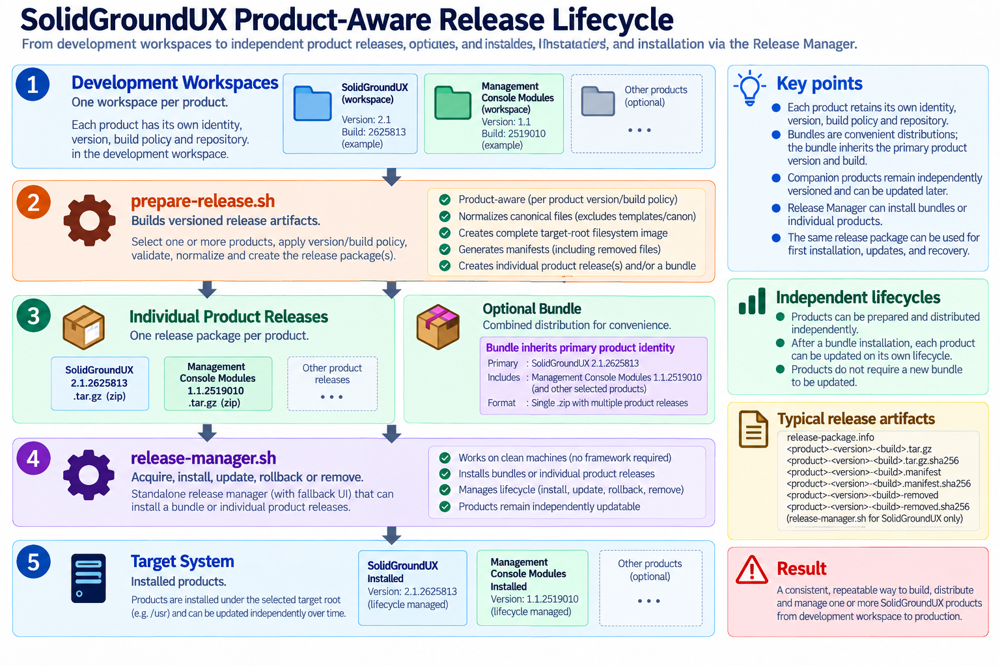
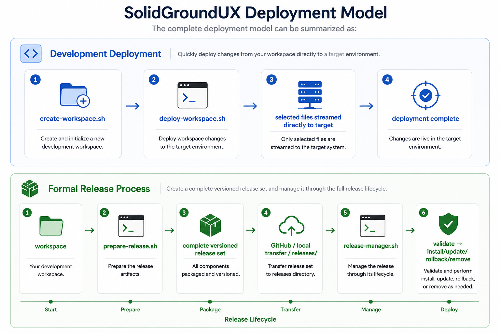

SolidGroundUX deployment is built around three complementary tools:
Together they cover the two main deployment scenarios:
The release manager is deliberately self-sufficient. It always carries a small standalone UI and default-theme fallback so it can bootstrap a clean machine or recover a damaged installation. When a healthy SolidGroundUX framework is available at the selected target root, the manager may reuse the normal framework UI primitives and active theme without making the release engine dependent on them.
prepare-release.sh creates the canonical project release set in the workspace release output directory. These build artifacts are not copied into the target-root release state; release-manager.sh admits them there only when a package is acquired/installed.
A release contains a complete target-root filesystem image rather than a binary patch. The distributable ZIP contains:
SolidGroundUX framework packages additionally contain release-manager.sh at ZIP root so the package can bootstrap a clean machine. Generic project packages omit the manager and are consumed by an already installed Release Manager.
The tar archive contains the complete target-root tree for that release.
release-package.info is the package shipping label. It identifies the package format, project slug, product, version, build, and release name without requiring the manager to inspect the tar archive first.
The normal manifest describes the paths contained in the release.
The removed manifest is generated by comparing the previous release manifest with the new one. It contains paths that existed in the previous release but no longer belong to the new release. release-manager.sh applies this file during an update.
Example:
Useful examples:
prepare-release.sh is a development/release-authoring tool and therefore uses the normal SolidGroundUX framework runtime.
Release preparation is product-aware. Each product retains its own identity, version, build policy, package metadata, repository information, and release state. Products can be prepared and distributed independently.
A bundle combines compatible product releases for convenient distribution without merging their identities. The bundle inherits the primary product version and build; companion products remain independently versioned and can subsequently be updated through the Release Manager on their own lifecycle.

release-manager.sh is the canonical installation and release-lifecycle tool.
It replaces the former separate installer, updater, and uninstaller scripts.
Its state model is intentionally filesystem-based and project-aware.
SolidGroundUX retains the canonical locations:
Additional projects keep their own state beneath:
The highest versioned archive directory represents the currently installed release for that project. No separate current-version database is required.
A first install consists of validating and extracting a complete release archive.
A later install is treated as an update. The new release is extracted normally, and its .removed manifest is applied so files that disappeared from the release are removed from the active installation.
Rollback installs a selected archived release again and removes files that belong only to the newer release. Newer archived releases are returned to releases/ so the highest remaining archive directory continues to represent the active version.
Removal removes the active release contents and returns archived release sets to releases/, preserving them for later reinstallation.
SolidGroundUX release ZIPs contain release-manager.sh together with the complete prepared release set and release-package.info.
A first installation therefore remains deliberately small:
Because the ZIP-root manager is not yet running from its canonical installed location, the default target root is `/`. In interactive mode the target root is still asked explicitly before installation proceeds.
On first run, release-manager.sh:
The bootstrap copy never overwrites the canonical manager merely because it is executing from another path. The installed release owns the permanent manager copy.
Running release-manager.sh without an action opens the interactive Release Manager:
Parameter values are presented as questions and persisted as standalone state so the accepted values become defaults on later runs. Typical parameters include:
The menu provides the release lifecycle actions:
The standalone fallback UI is based on the SolidGroundUX default theme. When a healthy SolidGroundUX framework is available at the selected target root, the manager may switch to the normal framework UI primitives and active theme.
Command-line actions invoke the same functions exposed by the interactive menu. Arguments therefore select an action and/or provide parameter values; they do not form a separate release workflow.
Check GitHub without changing the machine:
Download the latest release without installing it:
Check, download if required, and install the latest GitHub release:
Install the newest release already available locally:
Install directly from a package ZIP or URL:
Roll back to the previous archived release:
Roll back to a specific archived release:
Remove the selected project:
Select a known project explicitly:
Run an action without questions or confirmations:
Preview filesystem changes:
Override the default GitHub repository:
Alternate target roots can be supplied for development, testing, or recovery:
GitHub is the default authoritative source for determining the latest published SolidGroundUX release. Generic project packages can always be supplied directly by file or URL; project-specific online discovery can be added through project metadata without changing the package-installation engine.
release-manager.sh asks GitHub which SolidGroundUX release is current before downloading.
If that release is already present under archive/ it is considered installed.
If it is already present under releases/ it is considered downloaded.
In either case, the release manager avoids downloading the same release again.
New downloads are staged in a temporary directory first. The ZIP is extracted, the contained release identity is checked, required release files are verified, checksums are validated, and release paths are checked for unsafe traversal.
Only a valid release set is admitted into releases/.
deploy-workspace.sh serves a different purpose from release-manager.sh.
It is intended for rapid development deployment, where selected files from a workspace need to be transferred directly to a test or development machine.
It supports:
Example:
Incremental deployment:
deploy-workspace.sh does not create an installed release record and does not participate in archive-based rollback. It is therefore ideal during development, while prepare-release.sh plus release-manager.sh provide the formal release path.

This keeps the deployment architecture small, deterministic, and easy to inspect or manipulate directly when necessary.
Release integrity is validated before installation by checking the supplied SHA-256 sidecar files and release paths.
The release engine intentionally remains independent of the installed framework. Its standalone UI and default-theme fallback are always available. Framework UI primitives and the active theme are used only when they can be loaded successfully.
As a result, the canonical copy at:
remains usable for update, rollback, reinstallation, or removal even if the live SolidGroundUX installation is incomplete or damaged.
This independence is a core deployment design principle.